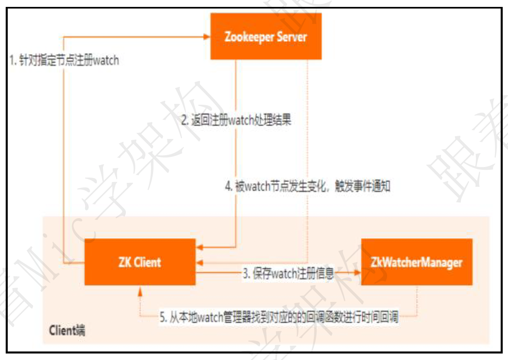

分布式
什么是分布式?
分布式就是我们把整个系统拆分成不同的服务然后将这些服务放在不同的服务器上减轻单体服务的压力提高并发量和性能。比如电商系统可以简单地拆分成订单系统、商品系统、登录系统等等，拆分之后的每个服务可以部署在不同的机器上，如果某一个服务的访问量比较大的话也可以将这个服务同时部署在多台机器上。
为什么要分布式?
单体应用的代码都集中在一起，而分布式系统的代码根据业务被拆分。所以，每个团队可以负责一个服务的开发，这样提升了开发效率。另外，代码根据业务拆分之后更加便于维护和扩展，更能提高整个系统的性能。
Dubbo
Dubbo 作为一款微服务框架，最重要的是向用户提供跨进程的 RPC 远程调用能力。Dubbo 的服务消费者通过一系列的工作将请求发送给服务提供者。
Dubbo 帮助我们解决了什么问题呢？
- 负载均衡：同一个服务部署在不同的机器时该调用哪一台机器上的服务。
- 服务调用链路生成：随着系统的发展，服务越来越多，服务间依赖关系变得错踪复杂，甚至分不清哪个应用要在哪个应用之前启动，架构师都不能完整的描述应用的架构关系。Dubbo 可以为我们解决服务之间互相是如何调用的。
- 服务访问压力以及时长统计、资源调度和治理：基于访问压力实时管理集群容量，提高集群利用率。
Dubbo 的服务请求失败怎么处理？
Dubbo 是一个RPC 框架，它为我们的应用提供了远程通信能力的封装，同时，Dubbo 在RPC 通信的基础上，逐步在向一个生态在演进，它涵盖了服务注册、动态路由、容错、服务降级、负载均衡等能力，基本上在微服务架构下面临的问题，Dubbo 都可以解决。而对于Dubbo 服务请求失败的场景，默认提供了重试的容错机制，也就是说，如果基于Dubbo 进行服务间通信出现异常，服务消费者会对服务提供者集群中其他的节点发起重试，确保这次请求成功，默认的额外重试次数是2 次。除此之外，Dubbo 还提供了更多的容错策略，我们可以根据不同的业务场景来进行选择。快速失败策略，服务消费者只发起一次请求，如果请求失败，就直接把错误抛出去。这种比较适合在非幂等性场景中使用失败安全策略，如果出现服务通信异常，直接把这个异常吞掉不做任何处理失败自动恢复策略，后台记录失败请求，然后通过定时任务来对这个失败的请求进行重发。并行调用多个服务策略，就是把这个消息广播给服务提供者集群，只要有任何一个节点返回，就表示请求执行成功。
广播调用策略，逐个调用服务提供者集群，只要集群中任何一个节点出现异常，就表示本次请求失败
要注意的是，默认基于重试策略的容错机制中，需要注意幂等性的处理，否则在事务型的操作中，容易出现多次数据变更的问题。
关于 Dubbo 架构的一些自测小问题
注册中心的作用了解么？
注册中心负责服务地址的注册与查找，相当于目录服务，服务提供者和消费者只在启动时与注册中心交互。
服务提供者宕机后，注册中心会做什么？
注册中心会立即推送事件通知消费者。
监控中心的作用呢？
监控中心负责统计各服务调用次数，调用时间等。
注册中心和监控中心都宕机的话，服务都会挂掉吗？
不会。两者都宕机也不影响已运行的提供者和消费者，消费者在本地缓存了提供者列表。注册中心和监控中心都是可选的，服务消费者可以直连服务提供者。
ZooKeeper
谈谈对 zookeeper 的理解
Zookeeper 是一个开源分布式协调组件，专门负责协调和解决分布式系统中的各类问题。我觉得可以从分布式系统中的三种典型应用场景说起：
- 集群管理
Zookeeper 提供了CP 的模型，来保证集群中的每个节点的数据一致性，当然Zk 本身的集群并不是CP 模型，而是顺序一致性模型，如果要保证 CP 特性，需要调用 sync 同步方法。
- 分布式锁
Zookeeper 提供了多种不同的节点类型，如持久化节点、临时节点、有序节点、容器节点等，其中对于分布式锁这个场景来说，Zookeeper 可以利用有序节点的特性来实现。除此之外，还可以利用同一级节点的唯一性特性来实现分布式锁。
- Master 选举
Zookeeper 可以利用持久化节点来存储和管理其他集群节点的信息，从而进行Master 选举机制。或者还可以利用集群中的有序节点特性，来实现Master 选举。目前主流的Kafka、Hbase、Hadoop 都是通过 Zookeeper 来实现集群节点的主从选举。
总的来说，Zookeeper 就是经典的分布式数据一致性解决方案，致力于为分布式应用提供高性能、高可用，并且具有严格顺序访问控制能力的分布式协调服务。它底层通过基于 Paxos 算法演化而来的 ZAB 协议实现。
数据结构
ZooKeeper 是一个树形结构，拥有一个层次化结构。每一个节点都被称为： ZNode，每个节点上都会保存自己的数据和节点信息。节点可以拥有子节点，同时也允许少量（1MB）数据存储在该节点之下。
节点可以分为四大类：持久化节点、临时节点 ：-e、持久化顺序节点 ：-s、临时顺序节点 ：-es
ZooKeeper 集群为啥最好奇数台？
ZooKeeper 集群在宕掉几个 ZooKeeper 服务器之后，如果剩下的 ZooKeeper 服务器个数大于宕掉的个数的话整个 ZooKeeper 才依然可用。
假如我们的集群中有 n 台 ZooKeeper 服务器，那么也就是剩下的服务数必须大于 n/2。偶数台和奇数台，允许宕机的容忍度是一样的，例如 2n 和 2n-1 的容忍度是一样的，都是只允许宕掉 n-1。因此，何必增加那一个不必要的 ZooKeeper 呢？
生产经验：
- 10 台服务器：3 台 zk;
- 20 台服务器：5 台 zk;
- 100 台服务器：11 台 zk;
- 200 台服务器：11 台 zk
Leader选举规则
Serverid：服务器ID，比如有三台服务器，编号分别是1,2,3。
- 编号越大在选择算法中的权重越大。
Zxid：数据ID，服务器中存放的最大数据ID。
- 值越大说明数据越新，在选举算法中数据越新权重越大。
在Leader选举的过程中，如果某台 ZooKeeper 获得了超过半数的选票，则此ZooKeeper就可以成为Leader
ZooKeeper 选举的过半机制防止脑裂
何为集群脑裂？
对于一个集群，通常多台机器会部署在不同机房，来提高这个集群的可用性。保证可用性的同时，会发生一种机房间网络线路故障，导致机房间网络不通，而集群被割裂成几个小集群。这时候子集群各自选主导致“脑裂”的情况。
举例说明：比如现在有一个由 6 台服务器所组成的一个集群，部署在了 2 个机房，每个机房 3 台。正常情况下只有 1 个 leader，但是当两个机房中间网络断开的时候，每个机房的 3 台服务器都会认为另一个机房的 3 台服务器下线，而选出自己的 leader 并对外提供服务。若没有过半机制，当网络恢复的时候会发现有 2 个 leader。仿佛是 1 个大脑（leader）分散成了 2 个大脑，这就发生了脑裂现象。脑裂期间 2 个大脑都可能对外提供了服务，这将会带来数据一致性等问题。
过半机制是如何防止脑裂现象产生的？
ZooKeeper 的过半机制导致不可能产生 2 个 leader，因为少于等于一半是不可能产生 leader 的，这就使得不论机房的机器如何分配都不可能发生脑裂。
Zookeeper 中的Watch 机制的原理？
Watch 机制采用了Push 的方式来实现，也就是说客户端和Zookeeper Server会建立一个长连接，一旦监听的指定节点发生了变化，就会通过这个长连接把变化的事件推送给客户端。
Watch 的具体流程分为几个部分：
首先，是客户端通过指定命令对特定路径增加watch
然后服务端收到请求以后，用HashMap 保存这个客户端会话以及对应关注的节点路径，同时客户端也会使用HashMap
存储指定节点和事件回调函数的对应关系。
当服务端指定被watch 的节点发生变化后，就会找到这个节点对应的会话，把变化的事件和节点信息发给这个客户端。
客户端收到请求以后，从ZkWatcherManager 里面对应的回调方法进行调用，完成事件变更的通知。
Zookeeper 在 Kafka 中的作用知道吗？
ZooKeeper 主要为 Kafka 提供元数据的管理的功能。Zookeeper 主要为 Kafka 做了下面这些事情：
- Broker 注册：在 Zookeeper 上会有一个专门用来进行 Broker 服务器列表记录的节点。每个 Broker 在启动时，都会到 Zookeeper 上进行注册，即到
/brokers/ids下创建属于自己的节点。每个 Broker 就会将自己的 IP 地址和端口等信息记录到该节点中去 - Topic 注册：在 Kafka 中，同一个Topic 的消息会被分成多个分区并将其分布在多个 Broker 上，这些分区信息及与 Broker 的对应关系也都是由 Zookeeper 在维护。比如我创建了一个名字为 my-topic 的主题并且它有两个分区，对应到 zookeeper 中会创建这些文件夹：
/brokers/topics/my-topic/Partitions/0、/brokers/topics/my-topic/Partitions/1 - 负载均衡：上面也说过了 Kafka 通过给特定 Topic 指定多个 Partition, 而各个 Partition 可以分布在不同的 Broker 上, 这样便能提供比较好的并发能力。 对于同一个 Topic 的不同 Partition，Kafka 会尽力将这些 Partition 分布到不同的 Broker 服务器上。当生产者产生消息后也会尽量投递到不同 Broker 的 Partition 里面。当 Consumer 消费的时候，Zookeeper 可以根据当前的 Partition 数量以及 Consumer 数量来实现动态负载均衡。
Kafka
消息队列常见的使用场景
场景有很多，但是比较核心的有 3 个：解耦、异步、削峰。
缺点有以下几个：
- 系统可用性降低
系统引入的外部依赖越多，越容易挂掉。本来你就是 A 系统调用 BCD 三个系统的接口就好了，人 ABCD 四个系统好好的，没啥问题，你偏加个 MQ 进来，万一 MQ 挂了咋整，MQ 一挂，整套系统崩溃的，你不就完了？如何保证消息队列的高可用，可以点击这里查看。 - 系统复杂度提高
硬生生加个 MQ 进来，你怎么保证消息没有重复消费？怎么处理消息丢失的情况？怎么保证消息传递的顺序性？ - 一致性问题
A 系统处理完了直接返回成功了，人都以为你这个请求就成功了；但是问题是，要是 BCD 三个系统那里，BD 两个系统写库成功了，结果 C 系统写库失败了，咋整？你这数据就不一致了。
Kafka 是什么？主要应用场景有哪些？
Kafka 是一个分布式流式处理平台。流平台具有三个关键功能：
- 消息队列：发布和订阅消息流，这个功能类似于消息队列，这也是 Kafka 也被归类为消息队列的原因。
- 容错的持久方式存储记录消息流：Kafka 会把消息持久化到磁盘，有效避免了消息丢失的风险。
- 流式处理平台： 在消息发布的时候进行处理，Kafka 提供了一个完整的流式处理类库。
Kafka 主要有两大应用场景：
- 消息队列：建立实时流数据管道，以可靠地在系统或应用程序之间获取数据。
- 数据处理： 构建实时的流数据处理程序来转换或处理数据流。
Kafka 的优势在哪里？
我们现在经常提到 Kafka 的时候就已经默认它是一个非常优秀的消息队列了，我们也会经常拿它跟 RocketMQ、RabbitMQ 对比。我觉得 Kafka 相比其他消息队列主要的优势如下：
- 极致的性能：基于 Scala 和 Java 语言开发，设计中大量使用了批量处理和异步的思想，最高可以每秒处理千万级别的消息。
- 生态系统兼容性无可匹敌：Kafka 与周边生态系统的兼容性是最好的没有之一，尤其在大数据和流计算领域。
队列模型了解吗？Kafka 的消息模型？
队列模型
使用队列（Queue）作为消息通信载体，满足生产者与消费者模式，一条消息只能被一个消费者使用，未被消费的消息在队列中保留直到被消费或超时。
比如：我们生产者发送 100 条消息的话，两个消费者来消费一般情况下两个消费者会按照消息发送的顺序各自消费一半（也就是你一个我一个的消费。）
队列模型存在的问题：
假如我们存在这样一种情况：我们需要将生产者产生的消息分发给多个消费者，并且每个消费者都能接收到完整的消息内容。
发布-订阅模型——Kafka 消息模型
发布-订阅模型主要是为了解决队列模型存在的问题。
发布订阅模型（Pub-Sub） 使用主题（Topic） 作为消息通信载体，类似于广播模式；发布者发布一条消息，该消息通过主题传递给所有的订阅者，在一条消息广播之后才订阅的用户则是收不到该条消息的。
在发布 - 订阅模型中，如果只有一个订阅者，那它和队列模型就基本是一样的了。所以说，发布 - 订阅模型在功能层面上是可以兼容队列模型的。
Producer、Consumer、Broker、Topic、Partition？
- Producer（生产者） : 产生消息的一方。
- Consumer（消费者） : 消费消息的一方。
- Broker（代理） : 可以看作是一个独立的 Kafka 实例。多个 Kafka Broker 组成一个 Kafka Cluster。
每个 Broker 中又包含了 Topic 以及 Partition 这两个重要的概念：
- Topic（主题） : Producer 将消息发送到特定的主题，Consumer 通过订阅特定的 Topic(主题) 来消费消息。
- Partition（分区） : Partition 属于 Topic 的一部分。一个 Topic 可以有多个 Partition ，并且同一 Topic 下的 Partition 可以分布在不同的 Broker 上，这也就表明一个 Topic 可以横跨多个 Broker 。这正如我上面所画的图一样。
如何保证Kafka的高可用？
Kafka 的多副本机制了解吗？好处？
Kafka 为分区（Partition）引入了多副本（Replica）机制。
分区（Partition）中的多个副本之间会有一个叫做 leader 的家伙，其他副本称为 follower。我们发送的消息会被发送到 leader 副本，然后 follower 副本才能从 leader 副本中拉取消息进行同步。
生产者和消费者只与 leader 副本交互。你可以理解为其他副本只是 leader 副本的拷贝，它们的存在只是为了保证消息存储的安全性。当 leader 副本发生故障时会从 follower 中选举出一个 leader,但是 follower 中如果有和 leader 同步程度达不到要求的参加不了 leader 的竞选。
Kafka 的多分区（Partition）以及多副本（Replica）机制有什么好处呢？
- Kafka 通过给特定 Topic 指定多个 Partition, 而各个 Partition 可以分布在不同的 Broker 上, 这样便能提供比较好的并发能力（负载均衡）。
- Partition 可以指定对应的 Replica 数, 这也极大地提高了消息存储的安全性, 提高了容灾能力，不过也相应的增加了所需要的存储空间。
Kafka 怎么避免重复消费
如何保证消息消费的幂等性？
kafka 出现消息重复消费的原因：
- 服务端侧已经消费的数据没有成功提交 offset（根本原因）。
- Kafka 侧 由于服务端处理业务时间长或者网络链接等等原因让 Kafka 认为服务假死，触发了分区 rebalance。
解决方案：
- 消费消息服务做幂等校验，比如 Redis 的 set、MySQL 的主键等天然的幂等功能。这种方法最有效。
- 将
enable.auto.commit参数设置为 false，关闭自动提交，开发者在代码中手动提交 offset。那么这里会有个问题：什么时候提交 offset 合适？- 处理完消息再提交：依旧有消息重复消费的风险，和自动提交一样
- 拉取到消息即提交：会有消息丢失的风险。允许消息延时的场景，一般会采用这种方式。然后，通过定时任务在业务不繁忙（比如凌晨）的时候做数据兜底。
- 基于数据库的唯一键来保证重复数据不会重复插入多条。因为有唯一键约束了，重复数据插入只会报错，不会导致数据库中出现脏数据。
Kafka 如何保证消息的消费顺序
我们在使用消息队列的过程中经常有业务场景需要严格保证消息的消费顺序。比如开通会员再以会员优惠结账
Kafka 中 Partition(分区)是真正保存消息的地方，我们发送的消息都被放在了这里。而我们的 Partition(分区) 又存在于 Topic(主题) 这个概念中，并且我们可以给特定 Topic 指定多个 Partition。
原理：每次添加消息到 Partition(分区) 的时候都会采用尾加法。 Kafka 只能为我们保证 Partition(分区) 中的消息有序。消息在被追加到 Partition(分区)的时候都会分配一个特定的偏移量（offset）。Kafka 通过偏移量（offset）来保证消息在分区内的顺序性。
对于如何保证 Kafka 中消息消费的顺序，有了下面两种方法：
- 1 个 Topic 只对应一个 Partition。
- 发送消息的时候指定 key/Partition。（推荐）
- Kafka 中发送 1 条消息的时候，可以指定 topic, partition, key,data（数据） 4 个参数。如果你发送消息的时候指定了 Partition 的话，所有消息都会被发送到指定的 Partition。并且，同一个 key 的消息可以保证只发送到同一个 partition，这个我们可以采用表/对象的 id 来作为 key 。
Kafka 如何保证消息不丢失
如何保证消息的可靠性传输？
Kafka存在丢消息的问题，消息丢失会发生在Broker，Producer和Consumer三种。
Producer
导致 Producer 端消息没有发送成功有以下原因：
- 网络原因：由于网络抖动导致数据根本就没发送到 Broker 端。
- 数据原因：消息体太大超出 Broker 承受范围而导致 Broker 拒收消息。
解决办法：
（1）网络抖动导致消息丢失，Producer 端可以进行重试。
（2）消息大小不合格，可以进行适当调整，符合 Broker 承受范围再发送。
Broker
- Kafka 通过「异步批量刷盘」的策略，先将数据存储到「PageCache」，再进行异步刷盘， 由于没有提供 「同步刷盘」策略，所以说从单个 Broker 来看还是很有可能丢失数据的。
解决办法：
kafka 通过「多 Partition （分区）多 Replica（副本）机制」最大限度的保证数据不丢失
Consumer
- 拉取消息后「先提交 Offset，后处理消息」，如果此时处理消息的时候异常宕机，由于 Offset 已经提交了, 待 Consumer 重启后，会从之前已提交的 Offset 下一个位置重新开始消费， 之前未处理完成的消息不会被再次处理，对于该 Consumer 来说消息就丢失了。
- 拉取消息后「先处理消息，在进行提交 Offset」， 如果此时在提交之前发生异常宕机，由于没有提交成功 Offset， 待下次 Consumer 重启后还会从上次的 Offset 重新拉取消息，不会出现消息丢失的情况， 但是会出现重复消费的情况，这里只能业务自己保证幂等性。
解决办法：
在剖析 Consumer 端丢失场景的时候，我们得出其拉取完消息后是需要提交 Offset 位移信息的，因此为了不丢数据，正确的做法是：拉取数据、业务逻辑处理、提交消费 Offset 位移信息。
我们还需要设置参数enable.auto.commit = false, 采用手动提交位移的方式。
另外对于消费消息重复的情况，业务自己保证幂等性, 保证只成功消费一次即可。
进阶，Kafka 如何保证消息不丢失？ - 知乎 (zhihu.com)
让你写一个消息队列，该如何进行架构设计？
- 首先这个 mq 得支持可伸缩性吧，就是需要的时候快速扩容，就可以增加吞吐量和容量，那怎么搞？设计个分布式的系统呗，参照一下 kafka 的设计理念，broker -> topic -> partition，每个 partition 放一个机器，就存一部分数据。如果现在资源不够了，简单啊，给 topic 增加 partition，然后做数据迁移，增加机器，不就可以存放更多数据，提供更高的吞吐量了？
- 其次你得考虑一下这个 mq 的数据要不要落地磁盘吧？那肯定要了，落磁盘才能保证别进程挂了数据就丢了。那落磁盘的时候怎么落啊？顺序写，这样就没有磁盘随机读写的寻址开销，磁盘顺序读写的性能是很高的，这就是 kafka 的思路。
- 其次你考虑一下你的 mq 的可用性啊？这个事儿，具体参考之前可用性那个环节讲解的 kafka 的高可用保障机制。多副本 -> leader & follower -> broker 挂了重新选举 leader 即可对外服务。
- 能不能支持数据 0 丢失啊？可以的，参考我们之前说的那个 kafka 数据零丢失方案。
mq 肯定是很复杂的，面试官问你这个问题，其实是个开放题，他就是看看你有没有从架构角度整体构思和设计的思维以及能力。确实这个问题可以刷掉一大批人，因为大部分人平时不思考这些东西。
分布式锁
在我们进行单机应用开发，涉及并发同步的时候，我们往往采用synchronized或者Lock的方式来解决多线程间的代码同步问题，这时多线程的运行都是在同一个JVM之下，没有任何问题。但当我们的应用是分布式集群工作的情况下，属于多JVM下的工作环境，跨JVM之间已经无法通过多线程的锁解决同步问题。
那么就需要一种更加高级的锁机制，来处理种跨机器的进程之间的数据同步问题——这就是分布式锁。
如果对性能要求比较高的话，建议使用 Redis 实现分布式锁。如果对可靠性要求比较高的话，建议使用 ZooKeeper 实现分布式锁。
ZK 分布式锁原理
核心思想：当客户端要获取锁，则创建节点，使用完锁，则删除该节点。
1.客户端获取锁时，在某节点(lock)下创建
临时顺序节点。- 使用临时节点的原因：防止客户端宕机，而无法释放锁，如果使用临时节点，即使宕机，节点也会自动删除（临时节点特性，客户端断开连接，临时节点自动删除）
- 使用顺序节点的原因：因为需要找最小节点，需要排顺序
2.然后获取该节点(lock)下面的所有子节点(/lock/1，/lock/2，/lock/3)，客户端获取到所有的子节点之后，如果发现自己创建的子节点序号最小，那么就认为该客户端获取到了锁。使用完锁后，将该节点删除。
3.如果发现自己创建的节点并非该节点所有子节点中最小的，说明自己还没有获取到锁，此时客户端需要找到比自己小的那个节点，同时对其注册事件监听器，监听删除事件。
4.如果发现比自己小的那个节点被删除，则客户端的监听器Watcher会收到相应通知，此时再次判断自己创建的节点是否是lock子节点中序号最小的，如果是则获取到了锁，如果不是则重复以上步骤继续获取到比自己小的一个节点，并注册监听。

总结：多个客户端在一个节点下创建临时顺序节点，然后去找序号最小的节点就是锁，用完之后删除就可以了。
为什么要设置对前一个节点的监听？
ZooKeeper 允许用户在指定节点上注册一些 Watcher（事件监听器），并且在一些特定事件触发的时候，ZooKeeper 服务端会将事件通知到感兴趣的客户端上去，该机制是 ZooKeeper 实现分布式协调服务的重要特性。
同一时间段内，可能会有很多客户端同时获取锁，但只有一个可以获取成功。如果获取锁失败，则说明有其他的客户端已经成功获取锁。获取锁失败的客户端并不会不停地循环去尝试加锁，而是在前一个节点注册一个事件监听器。
这个事件监听器的作用是：当前一个节点对应的客户端释放锁之后（也就是前一个节点被删除之后，监听的是删除事件），通知获取锁失败的客户端（唤醒等待的线程，Java 中的 wait/notifyAll ），让它尝试去获取锁，然后就成功获取锁了。
Redis 分布式锁原理
官方叫做 RedLock 算法，是 redis 官方支持的分布式锁算法。
这个分布式锁有 3 个重要的考量点：
- 互斥（只能有一个客户端获取锁）
- 不能死锁
- 容错（只要大部分 redis 节点创建了这把锁就可以）
redis 最普通的分布式锁
第一个最普通的实现方式，就是在 redis 里使用 setnx 命令创建一个 key，这样就算加锁。
SET resource_name my_random_value NX PX 30000
NX：表示只有key不存在的时候才会设置成功。（如果此时 redis 中存在这个 key，那么设置失败，返回nil）PX 30000：意思是 30s 后锁自动释放。别人创建的时候如果发现已经有了就不能加锁了。
释放锁就是删除 key ，但是一般可以用 lua 脚本删除，判断 value 一样才删除：
-- 删除锁的时候，找到 key 对应的 value，跟自己传过去的 value 做比较，如果是一样的才删除。
if redis.call("get",KEYS[1]) == ARGV[1] then
return redis.call("del",KEYS[1])
else
return 0
end
RedLock 算法
这个场景是假设有一个 redis cluster，有 5 个 redis master 实例。然后执行如下步骤获取一把锁：
- 获取当前时间戳，单位是毫秒；
- 跟上面类似，轮流尝试在每个 master 节点上创建锁，过期时间较短，一般就几十毫秒；
- 尝试在大多数节点上建立一个锁，比如 5 个节点就要求是 3 个节点
n / 2 + 1； - 客户端计算建立好锁的时间，如果建立锁的时间小于超时时间，就算建立成功了；
- 要是锁建立失败了，那么就依次之前建立过的锁删除；
- 只要别人建立了一把分布式锁，你就得不断轮询去尝试获取锁。
Zookeeper 和Redis 哪种更好？
- redis 分布式锁，其实需要自己不断去尝试获取锁，比较消耗性能。
- zk 分布式锁，获取不到锁，注册个监听器即可，不需要不断主动尝试获取锁，性能开销较小。
另外一点就是，如果是 redis 获取锁的那个客户端 出现 bug 挂了，那么只能等待超时时间之后才能释放锁；而 zk 的话，因为创建的是临时 znode，只要客户端挂了，znode 就没了，此时就自动释放锁。
个人实践认为 zk 的分布式锁比 redis 的分布式锁牢靠、而且模型简单易用。
分布式 session
完全不用 session
使用 JWT Token 储存用户身份，然后再从数据库或者 cache 中获取其他的信息。这样无论请求分配到哪个服务器都无所谓。
tomcat + redis
这个其实还挺方便的，就是使用 session 的代码，跟以前一样，还是基于 tomcat 原生的 session 支持即可，然后就是用一个叫做 Tomcat RedisSessionManager 的东西，让所有我们部署的 tomcat 都将 session 数据存储到 redis 即可。
还可以用上面这种方式基于 redis 哨兵支持的 redis 高可用集群来保存 session 数据，都是 ok 的。
这种方式会与 tomcat 容器重耦合，如果我要将 web 容器迁移成 jetty，难道还要重新把 jetty 都配置一遍？
spring session + redis
因为上面那种 tomcat + redis 的方式好用，但是会严重依赖于web容器，不好将代码移植到其他 web 容器上去，尤其是你要是换了技术栈咋整？比如换成了 spring cloud 或者是 spring boot 之类的呢？
所以现在比较好的还是基于 Java 一站式解决方案，也就是 spring。spring 基本上承包了大部分我们需要使用的框架，spirng cloud 做微服务，spring boot 做脚手架，所以用 sping session 是一个很好的选择。
给 sping session 配置基于 redis 来存储 session 数据，然后配置了一个 spring session 的过滤器，这样的话，session 相关操作都会交给 spring session 来管了。接着在代码中，就用原生的 session 操作，就是直接基于 spring sesion 从 redis 中获取数据了。
📚参考资料
-
❤️Sponsor
您的支持是我不断前进的动力，如果您感觉本文对您有所帮助的话，可以考虑打赏一下本文，用以维持本博客的运营费用，拒绝白嫖，从你我做起！🥰🥰🥰
| 支付宝 | 微信 |
 |
 |